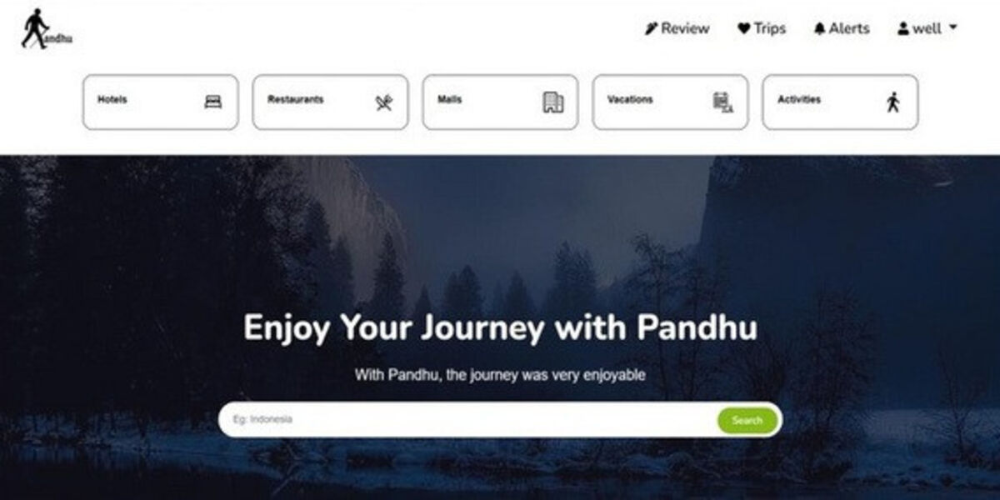
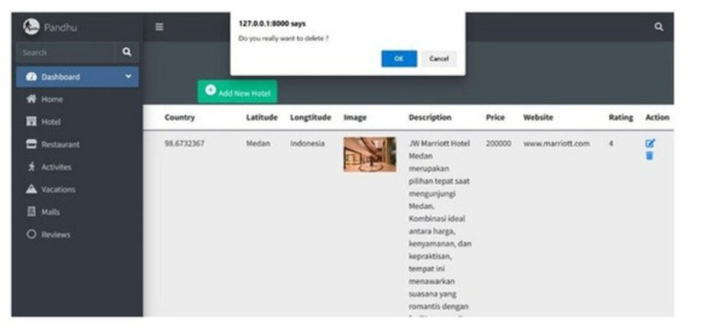

← Back to projects
Fullstack Developer
Pandhu: Trip Helper
A travel discovery platform inspired by TripAdvisor, built to help travelers find diverse, budget-friendly attractions, accommodations, and restaurants in one centralized place.
Contribution
- Led front-end development with a TripAdvisor-inspired UI for a user-friendly experience.
- Developed the complete admin panel from scratch with secure access.
- Implemented a full CMS with CRUD features for managing attractions, hotels, and restaurants.
- Validated all Laravel routes and CRUD operations to deliver a bug-free platform.

